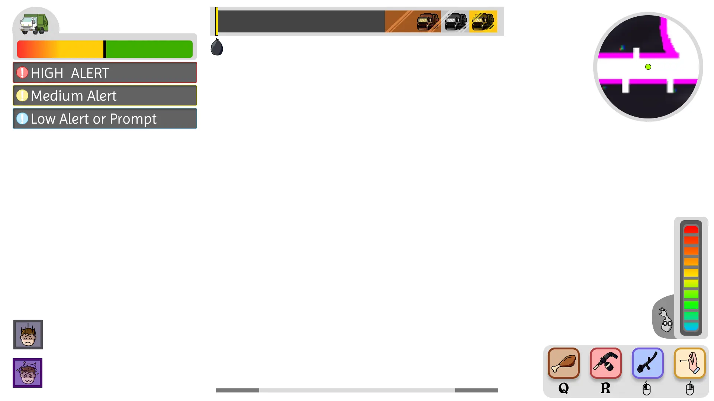
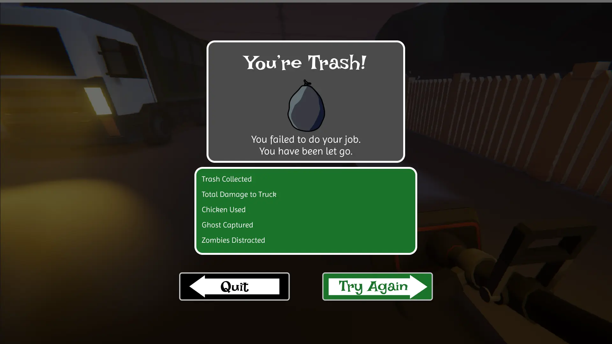
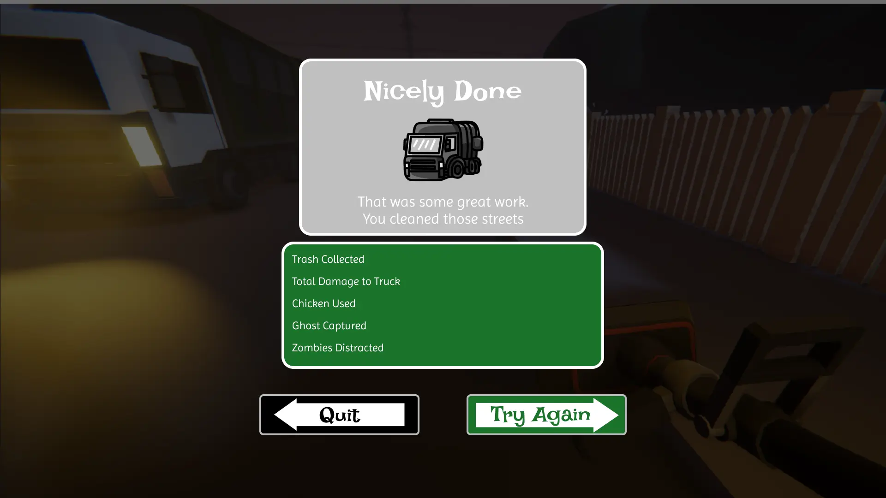
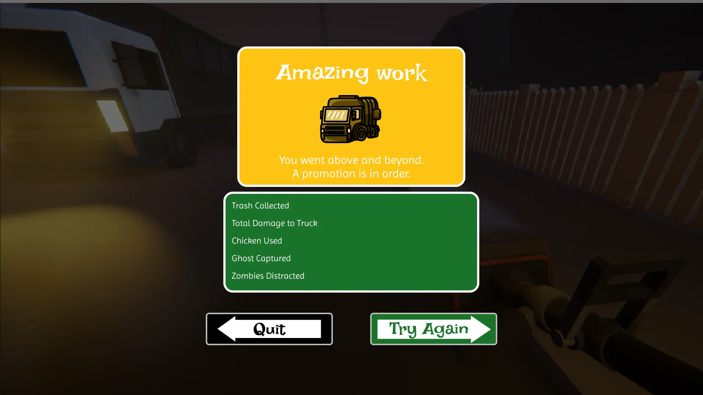

Monster Route
Señalamientos, indicadores y un poco de humor. Exploraciones de interfaz para un juego de acción 3D en primera persona, conectando su tema visual con menús, información de juego y resultados.
- Mis roles en el proyecto
- Gestión de proyecto · diseño UI · 3D
- En esta página
- Mockups de menú, HUD y resultados
- Contexto
- Proyecto de equipo en VFS
Dejar espacio para la acción.
El mockup del HUD agrupa el estado del camión y las alertas arriba a la izquierda, la puntuación en la parte superior, el minimapa a la derecha y la información de personajes y habilidades en los bordes inferiores.

Una estructura, distintos resultados.
El fracaso y tres niveles de desempeño reutilizan la misma composición: resultado, estadísticas y después salir o reintentar. El título, el icono y el color cambian según el resultado.




Aumentar el contraste del texto en los paneles de plata y oro, probar la lectura del HUD sobre el juego en movimiento, completar las estadísticas y definir estados de foco para control. Son siguientes pasos, todavía sin validar.
Estos son mockups originales del proyecto, presentados como exploraciones de UI. Mi rol general también incluyó producción y 3D. Las escenas y el arte mostrados provienen del proyecto de equipo. Esta selección se enfoca en mi trabajo de interfaces.